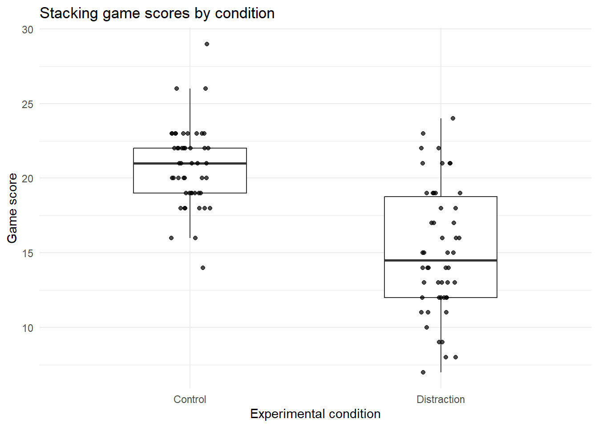

Week 6
Hypothesis Testing
Introduction
This week we will begin by playing a tower-stacking game.
- A block moves from side to side.
- Your job is to click, tap, or press the space bar to place the moving block on top of the previous block.
- The closer you are to the block below, the longer your tower can grow.
- The objective is to grow the tower is all as you can
There are two experimental conditions:
- Control: the standard game, with no additional distraction.
- Distraction: the game displays a distracting message after each successful stack.
Your tutor will assign you to either the Control group or the Distraction group. Play the game once. Record your final score and your group.
Suppose this experiment was completed with a larger sample. Download the data below and move it into your working directory.
Tasks
Note: Create a Quarto document in your Project folder and save it in your week 6 folder.
Part 1: Thinking about the problem
NoteQuestion 1
Before we start looking at the data, write the research question in words. What are we trying to find out?
ImportantClick for sample answer
A suitable research question is:
Do students who play the stacking game under distraction score lower, on average, than students who play the standard version of the game?
This is a comparison of two population means. We are not just interested in whether one particular student scores higher or lower. We want to know whether the average score differs between the two conditions.
NoteQuestion 2
Let:
\[ \mu_C = \text{mean score for students in the control condition} \]
and:
\[ \mu_D = \text{mean score for students in the distraction condition} \]
Write the null hypothesis and alternative hypothesis for the claim that distraction reduces performance.
ImportantClick for solution
The null hypothesis is that the distraction does not reduce average performance. We can write this as:
\[ H_0: \mu_C - \mu_D = 0 \]
The alternative hypothesis is that the control group has a higher mean score than the distraction group:
\[ H_1: \mu_C - \mu_D > 0 \]
Equivalently, we could write:
\[ H_0: \mu_C = \mu_D \]
and:
\[ H_1: \mu_C > \mu_D \]
This is a one-sided test because the research question is directional. We expect the distraction group to do worse.
NoteQuestion 3
Identify the parameter and statistic in this experiment.
- What is the population parameter?
- What is the sample statistic?
ImportantClick for solution
The population parameter is the true difference in mean game score between the control and distraction conditions:
\[ \mu_C - \mu_D \]
The sample statistic is the observed difference in sample means:
\[ \bar{x}_C - \bar{x}_D \]
The parameter is unknown. The statistic is calculated from our class data and used as evidence about the parameter.
Part 2: Exploratory Data Analysis
NoteQuestion 4
Calculate the number of students, mean score, and standard deviation of scores in each group.
Fill in the blanks.
summary_table <- class_results |>
group_by(___) |>
summarise(
n = ___,
mean_score = ___,
sd_score = ___
)
summary_table
ImportantClick for solution
summary_table <- class_results |>
group_by(group) |>
summarise(
n = n(),
mean_score = mean(score),
sd_score = sd(score)
)
summary_table# A tibble: 2 × 4
group n mean_score sd_score
<chr> <int> <dbl> <dbl>
1 Control 50 20.8 2.66
2 Distraction 50 15.1 4.25The control group had a higher mean score than the distraction group. This is consistent with the idea that distraction may reduce performance in the tower stacking game.
The standard deviation is also larger in the distraction group, which means scores were more spread out in that group.
NoteQuestion 5
Create a visualisation comparing scores between the control and distraction groups.
ggplot(class_results, aes(x = ___, y = ___)) +
geom_boxplot(width = 0.45, outlier.shape = NA) +
geom_jitter(width = 0.08, height = 0, alpha = 0.7) +
labs(
x = "Experimental condition",
y = "Game score",
title = "Stacking game scores by condition"
) +
theme_minimal()
ImportantClick for solution
ggplot(class_results, aes(x = group, y = score)) +
geom_boxplot(width = 0.45, outlier.shape = NA) +
geom_jitter(width = 0.08, height = 0, alpha = 0.7) +
labs(
x = "Experimental condition",
y = "Game score",
title = "Stacking game scores by condition"
) +
theme_minimal()
The plot should show that the control group generally scored higher than the distraction group.
However, there is still variation within each group. Some students in the distraction group scored highly, and some students in the control group scored lower than average. This is why we need statistical inference rather than simply comparing two averages by eye.
Part 3: Manual hypothesis test
We will now calculate the main ingredients of the hypothesis test by hand using R as a calculator.
The research question is:
Do students in the control group perform better, on average, than students in the distraction group?
Let:
\[ \mu_C = \text{mean score for the control condition} \]
and:
\[ \mu_D = \text{mean score for the distraction condition}. \]
The hypotheses are:
\[ H_0: \mu_C - \mu_D = 0 \]
\[ H_1: \mu_C - \mu_D > 0. \]
The null hypothesis says that there is no difference in mean performance between the two groups. The alternative hypothesis says that the control group has a higher mean score than the distraction group.
The sample statistic is:
\[ \bar{x}_C - \bar{x}_D. \]
If the control mean is much higher than the distraction mean, this statistic will be positive.
NoteQuestion 6
Calculate the observed difference in sample means:
\[ \bar{x}_C - \bar{x}_D. \]
Fill in the blanks.
mean_control <- class_results |>
filter(group == ___) |>
pull(___) |>
mean()
mean_distraction <- class_results |>
filter(group == ___) |>
pull(___) |>
mean()
mean_difference <- ___ - ___
mean_control
mean_distraction
mean_difference
ImportantClick for solution
mean_control <- class_results |>
filter(group == "Control") |>
pull(score) |>
mean()
mean_distraction <- class_results |>
filter(group == "Distraction") |>
pull(score) |>
mean()
mean_difference <- mean_control - mean_distraction
mean_control[1] 20.8mean_distraction[1] 15.12mean_difference[1] 5.68The values are:
\[ \bar{x}_C = 20.80 \]
\[ \bar{x}_D = 15.12 \]
So the observed difference is:
\[ \bar{x}_C - \bar{x}_D = 20.80 - 15.12 = 5.68. \]
The control group scored, on average, 5.68 points higher than the distraction group.
This observed difference is an estimate of:
\[ \mu_C - \mu_D. \]
NoteQuestion 7
Calculate the standard error of the difference in sample means.
Use:
\[ SE(\bar{x}_C - \bar{x}_D) = \sqrt{ \frac{s_C^2}{n_C} + \frac{s_D^2}{n_D} }. \]
Fill in the blanks.
control_scores <- class_results |>
filter(group == ___) |>
pull(___)
distraction_scores <- class_results |>
filter(group == ___) |>
pull(___)
n_control <- ___(control_scores)
n_distraction <- ___(distraction_scores)
sd_control <- ___(control_scores)
sd_distraction <- ___(distraction_scores)
se_difference <- sqrt(
___^2 / ___ +
___^2 / ___
)
se_difference
ImportantClick for solution
control_scores <- class_results |>
filter(group == "Control") |>
pull(score)
distraction_scores <- class_results |>
filter(group == "Distraction") |>
pull(score)
n_control <- length(control_scores)
n_distraction <- length(distraction_scores)
sd_control <- sd(control_scores)
sd_distraction <- sd(distraction_scores)
se_difference <- sqrt(
sd_control^2 / n_control +
sd_distraction^2 / n_distraction
)
se_difference[1] 0.708917The sample standard deviations are approximately:
\[ s_C = 2.66 \]
\[ s_D = 4.25 \]
The sample sizes are:
\[ n_C = 50 \]
\[ n_D = 50 \]
So:
\[ SE(\bar{x}_C - \bar{x}_D) = \sqrt{ \frac{2.66^2}{50} + \frac{4.25^2}{50} } \approx 0.71. \]
The standard error is about 0.71 points. This tells us how much the difference in sample means would tend to vary from sample to sample.
NoteQuestion 8
Calculate the t-statistic.
Use:
\[ t = \frac{(\bar{x}_C - \bar{x}_D) - 0}{SE(\bar{x}_C - \bar{x}_D)}. \]
Fill in the blanks.
t_stat <- ___ / ___
t_stat
ImportantClick for solution
t_stat <- mean_difference / se_difference
t_stat[1] 8.012222The t-statistic is approximately:
\[ t = \frac{5.68}{0.71} \approx 8.01. \]
This means the observed difference in sample means is about 8 standard errors above 0.
That is a very large positive test statistic. It suggests that the difference between the two groups is large relative to the amount of sampling variation we would expect.
NoteQuestion 9
Use the Welch degrees of freedom formula below to calculate an approximate p-value for the one-sided test.
\[ df = \frac{ \left(\frac{s_C^2}{n_C} + \frac{s_D^2}{n_D}\right)^2 }{ \frac{(s_C^2/n_C)^2}{n_C - 1} + \frac{(s_D^2/n_D)^2}{n_D - 1} }. \]
Then calculate:
\[ P(T \geq t_{obs}). \]
Fill in the blanks.
welch_df <- (
(___^2 / ___ + ___^2 / ___)^2
) / (
((___^2 / ___)^2 / (___ - 1)) +
((___^2 / ___)^2 / (___ - 1))
)
p_value <- pt(
q = ___,
df = ___,
lower.tail = ___
)
welch_df
p_value
ImportantClick for solution
welch_df <- (
(sd_control^2 / n_control + sd_distraction^2 / n_distraction)^2
) / (
((sd_control^2 / n_control)^2 / (n_control - 1)) +
((sd_distraction^2 / n_distraction)^2 / (n_distraction - 1))
)
p_value <- pt(
q = t_stat,
df = welch_df,
lower.tail = FALSE
)
welch_df[1] 82.22654p_value[1] 3.250701e-12The Welch degrees of freedom are approximately:
\[ df \approx 82.23. \]
The one-sided p-value is approximately:
\[ p \approx 0.00000000000325. \]
This is extremely small.
For this one-sided test, the p-value asks:
If the control and distraction conditions had the same population mean score, how unusual would it be to observe a sample difference at least this favourable to the control group?
Because the p-value is extremely small, the data are not very compatible with the no-difference explanation.
NoteQuestion 10
Make a conclusion at the 5% significance level.
Use your p-value from Question 9.
Fill in the blanks in the conclusion below.
The p-value is approximately . Since this is than 0.05, we ___ the null hypothesis. The data provide ___ that the control group has a higher mean score than the distraction group. The estimated difference is ___ points.
ImportantClick for sample answer
The p-value is approximately 0.00000000000325. Since this is less than 0.05, we reject the null hypothesis. The data provide strong evidence that the control group has a higher mean score than the distraction group. The estimated difference is 5.68 points.
A full conclusion could be:
The control group had a mean score of 20.80, while the distraction group had a mean score of 15.12. The estimated difference was 5.68 points, calculated as control minus distraction. The one-sided p-value was extremely small, so we reject the null hypothesis at the 5% level. These results provide strong evidence that students in the control group perform better, on average, than students in the distraction group.
This conclusion should still be interpreted in context. The test provides evidence of a difference in this experiment, but it does not mean every control student performed better than every distraction student.
Part 4: Using t.test() in R
The manual calculations above help us understand what the test is doing. In practice, we usually use t.test().
For this experiment, the groups are independent. A student in the control group is not paired with a particular student in the distraction group. So we use a two-sample t-test.
The default two-sample t-test in R is Welch’s t-test, which allows the two groups to have different variances.
NoteQuestion 11
Use t.test() to test whether the control group has a higher mean score than the distraction group.
Fill in the blanks.
t.test(
___ ~ ___,
data = ___,
alternative = ___
)
ImportantClick for solution
t.test(
score ~ group,
data = class_results,
alternative = "greater"
)
Welch Two Sample t-test
data: score by group
t = 8.0122, df = 82.227, p-value = 3.251e-12
alternative hypothesis: true difference in means between group Control and group Distraction is greater than 0
95 percent confidence interval:
4.500648 Inf
sample estimates:
mean in group Control mean in group Distraction
20.80 15.12 Because we set the factor levels earlier as Control then Distraction, the test compares:
\[ \mu_C - \mu_D. \]
The argument:
alternative = "greater"means the alternative hypothesis is:
\[ \mu_C > \mu_D. \]
The output should give a t-statistic of about 8.01 and an extremely small p-value. This matches the manual calculation.
NoteQuestion 12
Use t.test() to construct a 95% confidence interval for the difference in mean scores.
Use a two-sided version of the test so that the interval has both a lower and upper bound.
Fill in the blanks.
test_two_sided <- t.test(
___ ~ ___,
data = ___,
alternative = ___,
conf.level = ___
)
test_two_sided
test_two_sided$___
ImportantClick for solution
test_two_sided <- t.test(
score ~ group,
data = class_results,
alternative = "two.sided",
conf.level = 0.95
)
test_two_sided
Welch Two Sample t-test
data: score by group
t = 8.0122, df = 82.227, p-value = 6.501e-12
alternative hypothesis: true difference in means between group Control and group Distraction is not equal to 0
95 percent confidence interval:
4.269796 7.090204
sample estimates:
mean in group Control mean in group Distraction
20.80 15.12 test_two_sided$conf.int[1] 4.269796 7.090204
attr(,"conf.level")
[1] 0.95The 95% confidence interval for:
\[ \mu_C - \mu_D \]
is approximately:
\[ (4.27,\ 7.09). \]
This interval is entirely above 0, which suggests that the control group has a higher population mean score than the distraction group.
The interval also gives a sense of size. Based on this sample, the control condition is estimated to improve the mean score by somewhere between about 4.27 and 7.09 points compared with the distraction condition.
NoteQuestion 13
Write a short report of the result.
Your report should include:
- the research question;
- the estimated difference in means;
- the confidence interval;
- the p-value;
- a careful conclusion.
Use the code below to collect the numbers you need.
one_sided_test <- t.test(
___ ~ ___,
data = ___,
alternative = ___
)
two_sided_test <- t.test(
___ ~ ___,
data = ___,
alternative = ___,
conf.level = ___
)
mean_control <- class_results |>
filter(group == ___) |>
pull(___) |>
mean()
mean_distraction <- class_results |>
filter(group == ___) |>
pull(___) |>
mean()
mean_difference <- ___ - ___
mean_control
mean_distraction
mean_difference
one_sided_test$p.value
two_sided_test$conf.int
ImportantClick for sample answer
one_sided_test <- t.test(
score ~ group,
data = class_results,
alternative = "greater"
)
two_sided_test <- t.test(
score ~ group,
data = class_results,
alternative = "two.sided",
conf.level = 0.95
)
mean_control <- class_results |>
filter(group == "Control") |>
pull(score) |>
mean()
mean_distraction <- class_results |>
filter(group == "Distraction") |>
pull(score) |>
mean()
mean_difference <- mean_control - mean_distraction
mean_control[1] 20.8mean_distraction[1] 15.12mean_difference[1] 5.68one_sided_test$p.value[1] 3.250701e-12two_sided_test$conf.int[1] 4.269796 7.090204
attr(,"conf.level")
[1] 0.95A suitable report is:
We tested whether distraction reduced performance in a tower stacking game. The control group had a mean score of 20.80, while the distraction group had a mean score of 15.12. The estimated difference was 5.68 points, calculated as control minus distraction. A two-sided 95% confidence interval for the difference was approximately 4.27 to 7.09 points. For the one-sided hypothesis test that the control mean is higher than the distraction mean, the p-value was extremely small. These results provide strong evidence that the control group performed better, on average, than the distraction group.
A careful conclusion avoids saying that the test proves distraction always reduces performance. It should refer to evidence, uncertainty, and the size of the estimated effect.
Part 5: Thinking critically about the experiment
Hypothesis testing is not only about calculation. The quality of the conclusion depends on the design of the study and the way the data were collected.
NoteQuestion 14
Why was it important for students to be assigned to groups before playing the game?
ImportantClick for solution
If students choose their own group, the groups may differ before the experiment even starts. For example, students who are confident at games might choose the distraction condition, or students who want an easier task might choose the control condition.
Assigning students to groups before playing helps make the groups more comparable. This means that differences in scores are more plausibly due to the condition rather than pre-existing differences between students.
NoteQuestion 15
Suppose the p-value had been greater than 0.05. Would that prove that distraction has no effect on performance? Explain.
ImportantClick for solution
No. A p-value greater than 0.05 would mean the data did not provide strong enough evidence against the null hypothesis at the 5% level.
It would not prove that distraction has no effect.
There are several possible explanations for a non-significant result:
- distraction may genuinely have little or no effect;
- the class sample may be too small;
- scores may be highly variable;
- the game may not measure the kind of performance affected by distraction;
- some students in the distraction group may ignore the messages.
This is why we should report the estimated difference and confidence interval, not only the p-value.
NoteQuestion 16
In this dataset, the p-value is far below 0.05. Does this prove that distraction causes lower performance for everyone? Explain.
ImportantClick for solution
No. The small p-value provides strong evidence against the no-difference explanation in this dataset, but it does not prove that distraction causes lower performance for everyone.
The strength of the causal interpretation depends on the design. If students were randomly assigned to the two conditions and the experiment was run fairly, then a causal interpretation is more reasonable.
However, we should still be careful. The sample may not represent all students, the game is simple, and the distraction messages may not represent all real-world distractions.
A better conclusion is:
In this experiment, students in the distraction condition scored lower on average than students in the control condition. The result provides evidence that distraction reduced performance in this setting.
Homework
In the tutorial, we compared two independent groups: one group played the standard tower stacking game, and another group played the game with distractions.
For this homework, we will think about a different experimental design. Instead of assigning each student to only one condition, suppose every student plays the game twice:
- once in the control condition;
- once in the distraction condition.
This is called a within-subjects design or a paired design, because each student contributes a pair of scores. The advantage of this design is that each student acts as their own comparison. Some students may naturally be better at the game than others. A paired design helps account for this because we compare each student’s distraction score to their own control score.
Run the code below to simulate data for 40 students. Each student has their own baseline ability. Then we simulate their score in the control condition and their score in the distraction condition. In this simulation, the distraction condition reduces the expected score by about 4 points. However, individual scores still vary because students have different abilities and because there is random variation from one attempt to another.
set.seed(2420)
paired_stack <- tibble(
student_id = 1:40,
ability = rnorm(40, mean = 20, sd = 3),
control_score = round(ability + rnorm(40, mean = 0, sd = 2)),
distraction_score = round(ability - 4 + rnorm(40, mean = 0, sd = 2))
)You should treat this simulated dataset as if it came from a real experiment.
Your task is to run an analysis of the data and produce a short Quarto report. The report should explain the study design, summarise the data, carry out a paired t-test, and interpret the results carefully.
Your report should include the following:
- A brief introduction explaining the research question.
- A short explanation of why this is a paired design.
- A table showing the mean and standard deviation of the control scores and distraction scores.
- A new variable containing the paired differences.
- A visualisation of the paired differences.
- The null and alternative hypotheses for the paired t-test (assume a one-sided test).
- A paired t-test using t.test().
- A confidence interval for the mean paired difference.
- A short written conclusion.